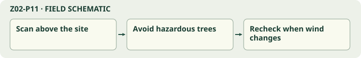

Z02-P11 · Shelter and housing
Look up before stopping below trees
Screen the campsite and approach for falling trees or suspended material.
When it applies · Forested site, particularly after wind, fire, heavy snow or visible damage.
Equipment · Daylight or sufficient visibility to assess the area from a safe position.

Actions
- Scan for dead, damaged or leaning trees and material overhead before entering the potential fall zone.[E13]
- Choose a durable site away from hazardous trees. Tell campground staff about a hazard in a designated site.[E13, E03]
- Reassess when wind rises or debris falls. Move to safer ground rather than trying to correct an unstable tree or branch.[E13, ED]
Verify · The sleep site, gathering spot and access route avoid observed overhead hazards.[E13, ED]
Stop or change course · Poor visibility, active fall or strong wind can defeat the inspection. Use a different safe site.[E13, ED]
Evidence and editorial notes
- E03 · NPS · Finding and Setting Up a Campsite
- Finding a campsite · Legal established or designated campsite
Choose a durable legal site suited to the conditions. Campsite rules and physical risks vary by park.
Primary source · checked 2026-11-24 - E13 · USDA Forest Service · Hazard Tree Safety
- What You Can Do to Reduce Risk · Forest campsites and stops
Look for dead trees and falling material. Stay away from hazardous trees and move away when winds make the site unsafe.
Primary source · checked 2026-11-24
Source lineage · Forest Service hazard tree guide; new manuscript.